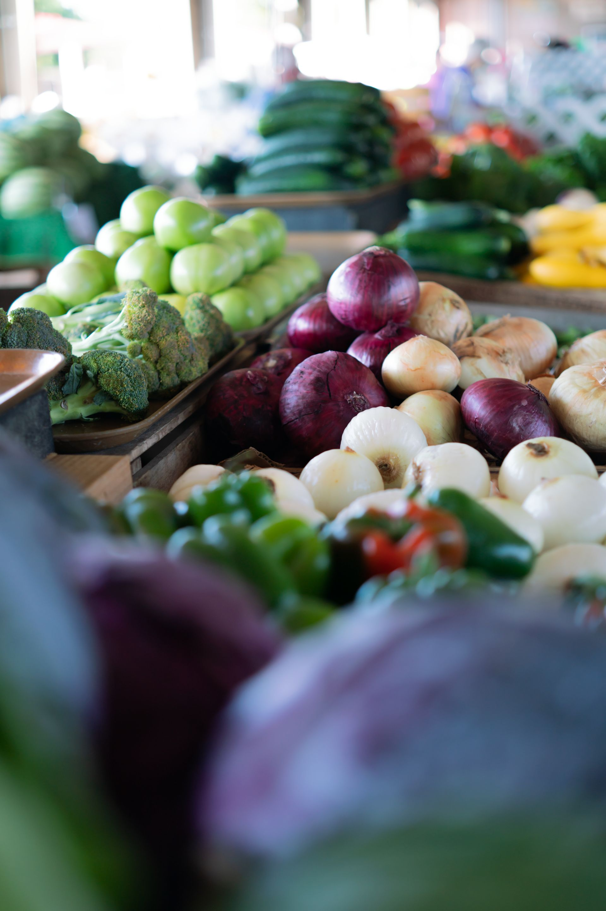
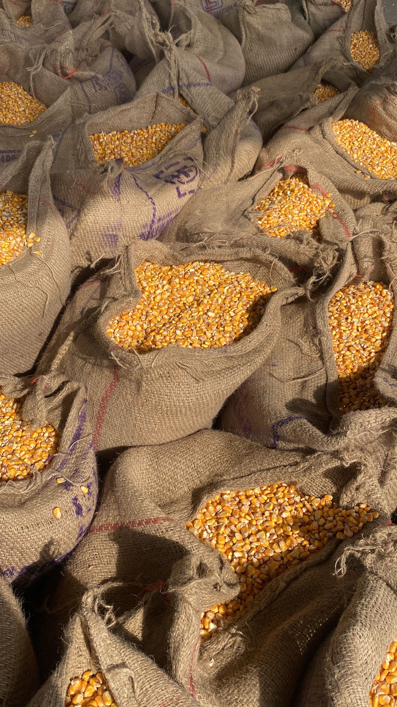
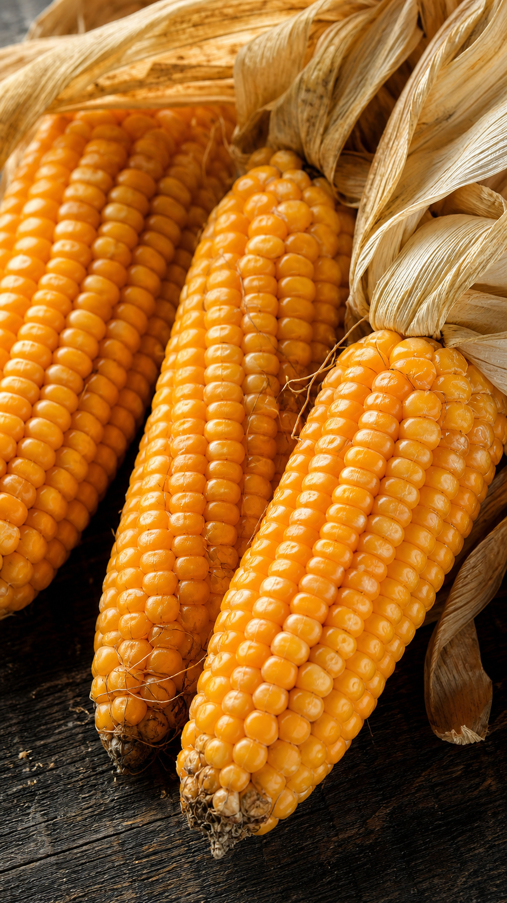

qui sommes-nous?
Nous sommes une entreprise spécialisée dans l'agriculture durable et les pratiques écologiques.
Fondée en 2025, notre entreprise s'engage pour un avenir plus durable en promouvant des méthodes agricoles respectueuses de l'environnement. Nous sommes engagés pour préserver les ressources naturelles et favoriser une agriculture responsable.





Nos Services
Nous offrons une gamme complète de services pour soutenir l'agriculture durable et les pratiques écologiques.
- conseil en agriculture durable
- formation sur les pratiques écologiques
- accompagnement des agriculteurs dans la mise en œuvre de méthodes respectueuses de l'environnement
Inscrivez-vous
rejoignez notre communauté et bénéficiez de nos services!